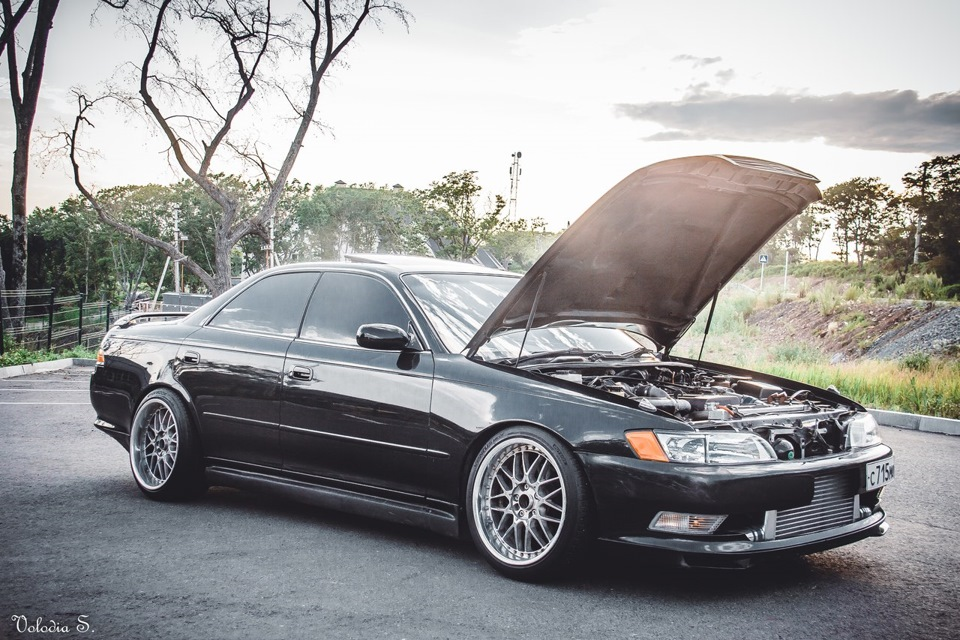
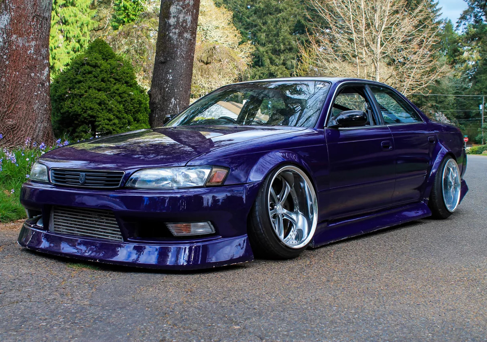

Эпоха смены поколений: от угловатости к обтекаемости
Пятое поколение Mark II (X80), выпускавшееся в конце 80-х, было воплощением классических японских линий — угловатое, с четкими гранями и консервативной эстетикой. С появлением в 1992 году X90 автомобиль кардинально преобразился, совершив резкий скачок в будущее. Он полностью соответствовал духу 90-х: плавные, обтекаемые формы кузова, интегрированные бамперы, обилие пластика в экстерьере и более модный, округлый и эргономичный салон. Это был не просто рестайлинг, а качественная эволюция, которая перевела модель из разряда «просто надежных седанов» в статус культовых автомобилей.
Дизайн и философия: Универсальность как искусство
Главной идеей Mark II X90 была сбалансированность. В отличие от нарочито спортивного Chaser и вычурного Cresta, он сохранял элегантный и строгий силуэт, оставаясь автомобилем для всех. Визитной карточкой многих комплектаций (например, Grande) стала виниловая накладка на стойках кузова, имитирующая дерево, что подчеркивало его статусность и ориентацию на семейство или бизнес-класс. При этом, в спортивных версиях Tourer этот элемент отсутствовал, подчеркивая их динамичный характер.
Широта модельного ряда была невероятной: от базового седана до практичного универсала (Mark II Qualis) и элегантного хардтопа (с безрамными дверьми), что демонстрировало удивительную универсальность платформы.
Техническое сердце X90: Золотой фонд JZ
Под капотом скрывалось главное богатство Mark II — рядные 6-цилиндровые двигатели серии JZ, которые и создали ему славу:
- 1JZ-GE (2.5 л, 200 л.с.): Атмосферный, невероятно надежный, тяговитый и достаточно экономичный двигатель. Идеальный баланс для повседневной езды.
- 1JZ-GTE (2.5 л, турбо, 280 л.с.): Легендарный турбированный мотор с системой Twin Turbo (две последовательные турбины T25). Заводская мощность была ограничена «джентльменским соглашением», но его запас прочности и огромный тюнинговый потенциал (возможность снять 400+ л.с. без глубокого вмешательства) делали эту версию объектом мечтаний энтузиастов.
- Также предлагались и другие двигатели, такие как рядный «четверка» 1G-FE (2.0 л) и дизельный 2L-TE, но именно моторы серии JZ стали визитной карточкой поколения.
Классическая заднеприводная компоновка (FR) обеспечивала отличную управляемость, предсказуемость в заносе и простоту конструкции. В пару к моторам предлагались либо 4- или 5-ступенчатый «автомат», либо 5-ступенчатая «механика», которая особенно ценилась поклонниками динамичной езды. Именно в этом поколении Mark II заложил основу для своей будущей славы как одна из лучших платформ для дрифта и тюнинга.
.jpeg)

Взросление стиля
В 1996 году модель пережила рестайлинг и перешла на платформу X100. Изменения были эволюционными, но значимыми. Автомобиль «повзрослел»: исчезла плавность линий 90-х, кузов приобрел более резкие и угловатые очертания. Передние и задние фары стали уже, бамперы — массивнее. Исчезли и накладки «под дерево», что сделало дизайн чище и современнее.
Технологический рывок
Поколение X100 активно оснащался по меркам своего времени: подушки безопасности, ABS, системы стабилизации (в более богатых комплектациях) стали более распространенными. Салон стал тише и комфортнее за счет улучшенной шумоизоляции. Главное изменение под капотом затронуло турбированный двигатель: в 1997 году с мотора 1JZ-GTE убрали систему Twin Turbo, заменив ее на одну турбину с технологией Twin Scroll. Это позволило снизить турбояму и упростить конструкцию, сохранив заявленную мощность в 280 л.с.
Апофеоз спортивного духа
Именно в этом поколении появилась знаменитая спортивная комплектация Tourer V, которая напрямую конкурировала с Chaser. Она объединяла в себе все лучшие черты Mark II — солидность, комфорт и мощный турбированный двигатель, став идеальной базой для тюнинга и уличных гонок.
Феномен популярности в СНГ
Mark II X90/X100 стал народным героем на постсоветском пространстве по нескольким причинам:
Неубиваемая надежность: Конструкция кузова и двигателей JZ славилась способностью переносить суровые условия и плохое обслуживание.
Соотношение цены и возможностей: За небольшие деньги покупатель получал комфортный седан с мощным 6-цилиндровым мотором и задним приводом.
Ремонтопригодность: Простота конструкции позволяла проводить многие ремонты самостоятельно.
Потенциал для тюнинга: Базовая надежность и задний привод сделали Mark II одной из самых популярных платформ для дрифта и стрит-рейсинга.
Плюсы и минусы владения сегодня
Покупка Mark II в 2025 году — это приобретение автомобиля с характером.
Плюсы:
- Культовый статус и узнаваемость.
- Комфортный и очень просторный салон.
- Феноменальная надежность механической части.
- Огромное сообщество фанатов и доступность запчастей.
Минусы и «болевые точки»:
- Возраст: Проблемы с возрастной электроникой, датчиками, пластиком и резиной.
- Ржавчина: Главные враги — колесные арки, пороги и днище. Нужен тщательный осмотр.
- Состояние: Большинство автомобилей изношены или имеют кривой тюнинг. Ценится «ориджинал».
- Расход топлива: Турбированные версии в городе могут показывать расход 15-20 л/100 км.
Заключение
Toyota Mark II в кузовах X90 и X100 — это последний из могикан «золотой эры» японского автопрома. Его сила — в универсальности. Это был идеальный автомобиль для всех: для семьи, для бизнесмена и для тюнера. Он воплотил в себе японскую философию качества, долговечности и сбалансированности. И именно за эту честность и надежность его продолжают любить и эксплуатировать спустя десятилетия.

 89081317488
89081317488

 8(908)131-74-88
8(908)131-74-88.svg) fayther2@yandex.ru
fayther2@yandex.ru